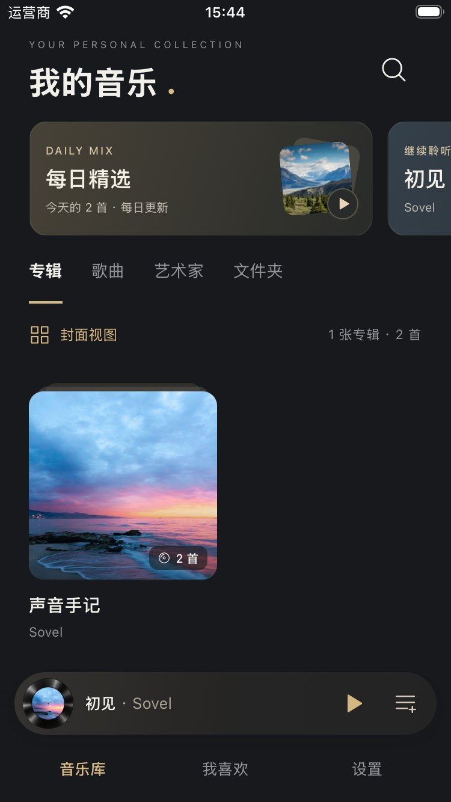
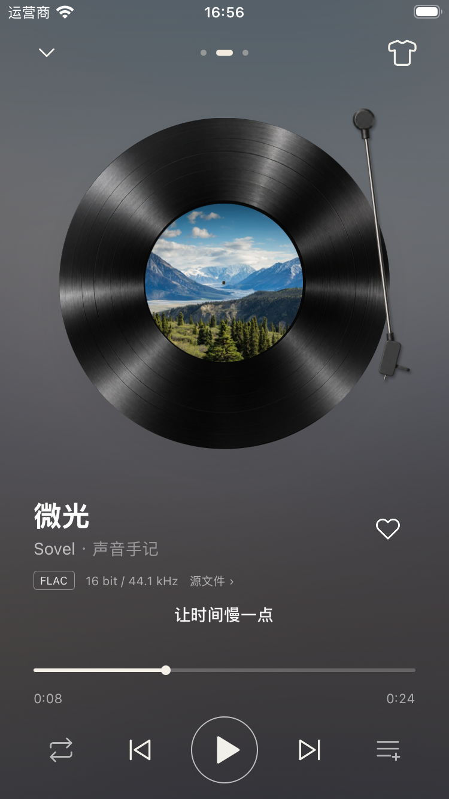
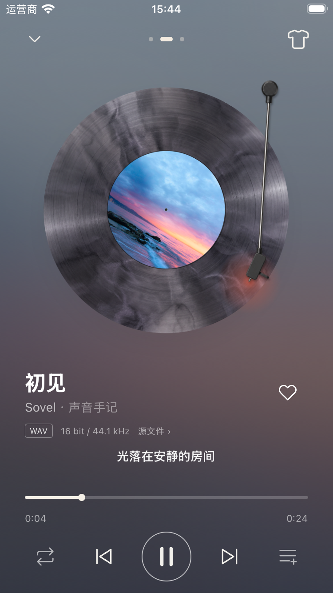
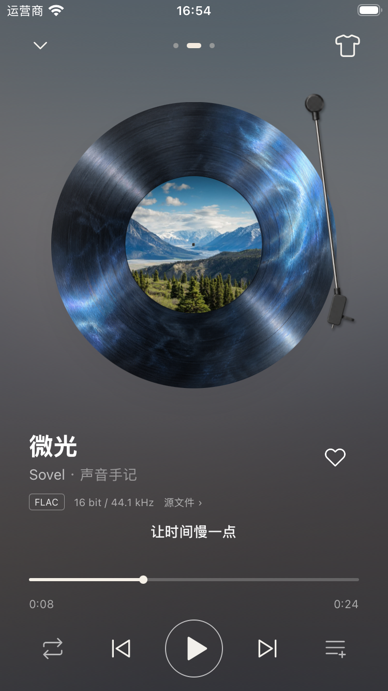
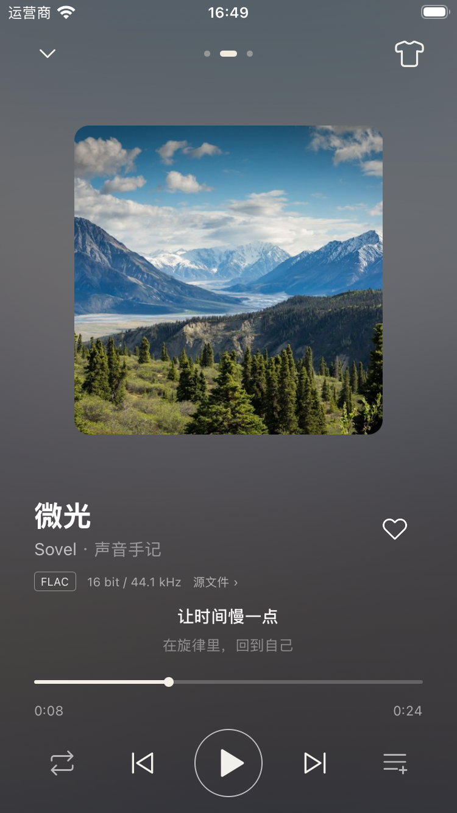
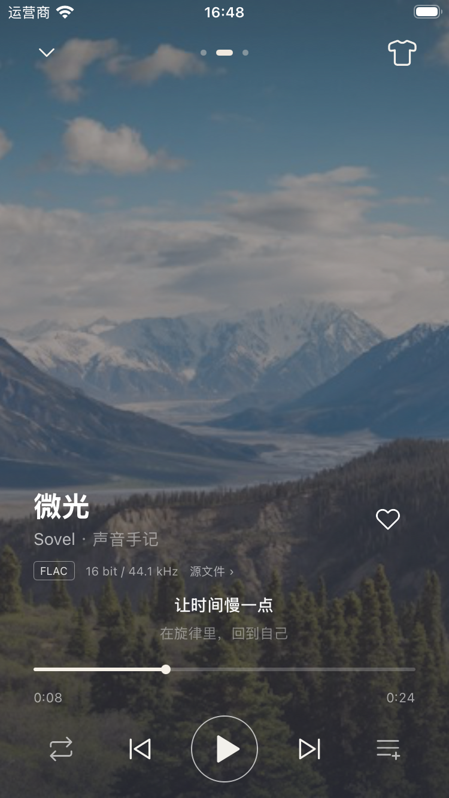
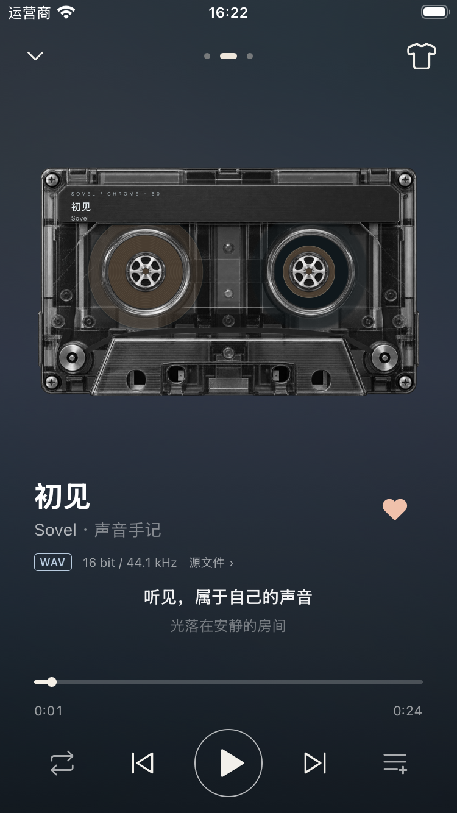
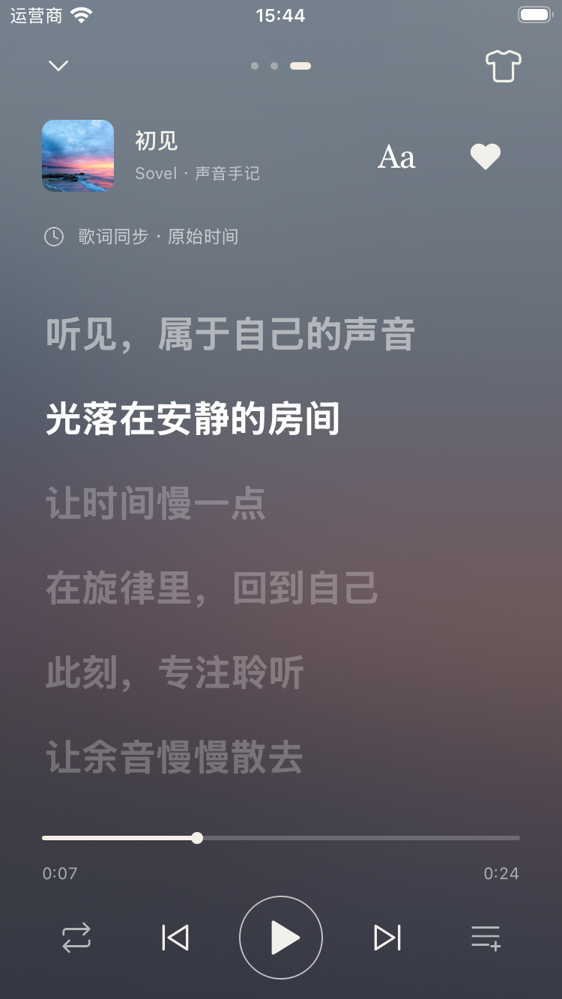

01 / 08LIBRARY
A collection.
All your own.
Your albums, artists, and favorites, together. A quiet place to rediscover the music you keep.

AN OPEN-SOURCE HIFI MUSIC PLAYER
A considered home for your collection. Local listening, vinyl and cassette views, and connections to your NAS and music servers.
01 / 08LIBRARY
Your albums, artists, and favorites, together. A quiet place to rediscover the music you keep.

02 / 08CLASSIC VINYL
A deep black record. A favorite sleeve. Choose your tonearm, its color, and the pace of the spin.

03 / 08SMOKED VINYL
Smoky textures and translucent grooves. A different material, with the same familiar controls.

04 / 08ICE BLUE VINYL
Cool blue reflections, a different character. Change the finish whenever the mood changes.

05 / 08ALBUM ARTWORK
The artwork, given room to breathe. Your track, progress, and playback controls stay close at hand.

06 / 08IMMERSIVE
Artwork fills the screen. Your music sets the atmosphere, with the essentials within reach.

07 / 08CASSETTE
Four distinct cassette styles, with reels that follow playback. In landscape, controls sit beside synchronized lyrics.

08 / 08LYRICS
Lyrics have a page of their own. Follow the current line, and fine-tune the timing for each song.

TAKE YOUR MUSIC WITH YOU
The latest Android build, straight from our GitHub Releases. iOS is currently available to build from source.
Published packages are always available on GitHub.
Choose the architecture supported by your Android system. Install one APK.
Remote-library features are in development source. Check release notes to see whether the selected package includes them.
02 / A SIMPLE IDEA
You already have a collection. Sovel gives it a considered place to live — keeping the original files right where you put them.
Choose your files or folders. Scan their tags and artwork. The library references your audio instead of making another copy.
Rescan without losing favorites. Return to your queue and position. Keep listening history and preferences on your device.
See the source file’s format, bit depth, and sample rate. Output capabilities are kept separate, with clear limits.
03 / YOUR MUSIC, TOGETHER
Keep your files where they belong. Bring local folders, your NAS and selected music-server libraries into the same listening space.
Discover nearby Jellyfin, Emby and DLNA servers, or enter an address. Compact source cards open to aggregation, priority and sync; turning one off keeps its index and favorites.
Matching copies share a song row. Choose a version and remember it; distinct editions stay separate.
Sync the catalog, then stream from your server. No audio download or automatic transcoding; playback depends on the device codec.
In the app: Settings → 音乐来源. Discover or enter a server, sign in, select libraries or folders, then sync. Scanning comes first; tag import follows with a fixed total.
Connection & version selection ↗Available in development source; check release notes for APK availability. Local protocol and native SMB2/Range tests are covered. Real NAS compatibility, signed iOS multicast permission and Android device playback still need validation. DLNA reads libraries; casting is not included.
04 / GROWING IN THE OPEN
Sovel is an early, actively developed project. Source capabilities and published packages may differ; release notes describe each package.
Local playback verified on an iOS simulator; remote flow tested with a mock server. Real-server compatibility and Android validation for the new integration remain open.
A FEW THINGS TO KNOW
Selecting files or folders builds a local index and references the original audio. Copying into the app is a separate option. File providers may maintain their own caches, and Sovel caches artwork and stores your library data.
Among available, supported copies, your remembered choice comes first. Automatic selection then prefers lossless, local files, and source priority. Matching is conservative; Live and remastered editions are not merged by title alone. A complete album from one source is preferred when there are no per-song overrides.
Android and iOS source integrate DSF-to-PCM decoding in new native builds. iOS simulator playback and restored seeking are verified; physical DAC output remains unverified. USB exclusive output and native DSD/DoP are not implemented. USB DACs use system audio; bit-perfect output is not promised. Check release notes for APK availability.
Choose an Android package in this page’s download section; use universal if unsure. Only packages published for the displayed release are available. Installed apps can check in Settings → 版本更新; select the preview channel for Beta / RC updates. iOS is currently available to build from source. Build instructions ↗
Try the app, share a reproducible issue, help test audio files and devices, or contribute code and translations. For playback reports, include your device, OS, and audio format. Open an issue ↗
A SMALL PROJECT. AN OPEN INVITATION.
For people who collect music, and people who care how it feels to listen. Come help shape what Sovel becomes.
Open source under MIT. Built with React Native & TypeScript.